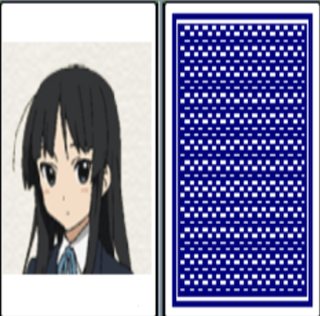
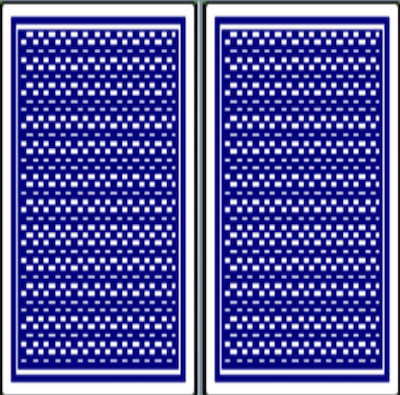
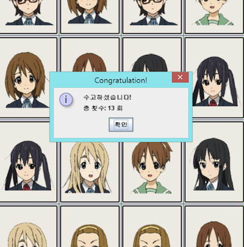

実装機能
|  |
イメージを見せる機能 カードをクリックすると絵が見えます。 |
|  |
イメージを隠す機能 2枚のカードをクリックして、表示された画像が異なる場合は、画像をもう一度隠します。 |
|  |
ゲームを終了する機能 同じ絵をみんな見つけたら「お疲れ様でした！」という窓が開いてクリック回数までお知らせします。 |
社会に貢献しようとしたこと
クリエイティブなゲームを制作してリリースするので、ゲームをしながら一味違う楽しさを感じることができます。
クリエイティブなゲームを制作してリリースするので、ゲームをしながら一味違う楽しさを感じることができます。
背景と目的
創造的なゲームを作って人々にサービスを提供するために、ゲーム開発者になることに備えて私だけのゲームを制作することになりました。
創造的なゲームを作って人々にサービスを提供するために、ゲーム開発者になることに備えて私だけのゲームを制作することになりました。
学んだこと
- JavaからThreadへの非同期方式の活用方法とMulti Threadingの構造を知りました。
- Java Swingでコンピュータプログラムを実装する方法を学びました。
進行手順
- 2年生 2学期専攻科目「オブジェクト指向プログラミング」の時間にイメージを複数のボタンに切るプログラムを提供していただきました。これをボタンの配置を混ぜた後、ボタンをクリックすると絵が見えるようにしました。
- ボタン2つをクリックしたとき、互いに同じ画像であればそのままにしておき、異なる画像であれば0.5秒後にその画像を再選別するようにしました。この時点で、Java Threadが提供するsleep関数を使用しました。
- ボタンをクリックするたびにクリック数を数えるようにしました。この機能は、変数に値を1だけ加算する方法を使用して実装しました。
- 同じ絵をすべて見つけたら、「苦労しました！」というウィンドウでクリック回数を教えてくれました。
- 最後にゲームスタート画面を実装しました。
- このようにして目的のプログラムを実装できました。
能力強化のために最も努力したこと
Java Swingで実装された既存のプログラム分析と創造的なゲームで再構築
Java Swingで実装された既存のプログラム分析と創造的なゲームで再構築
全体構造

使用技術
Java
Java
開発環境
Eclipse IDE
Eclipse IDE